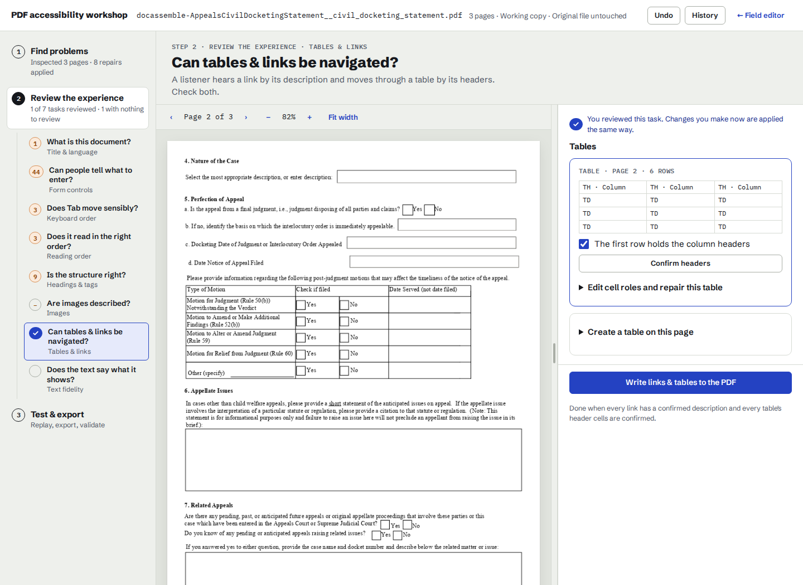
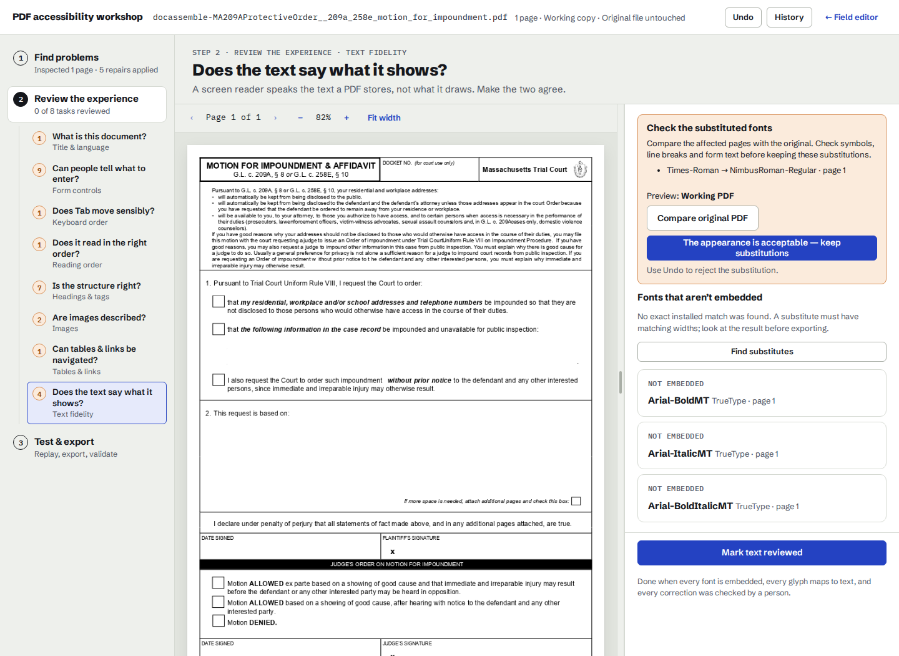
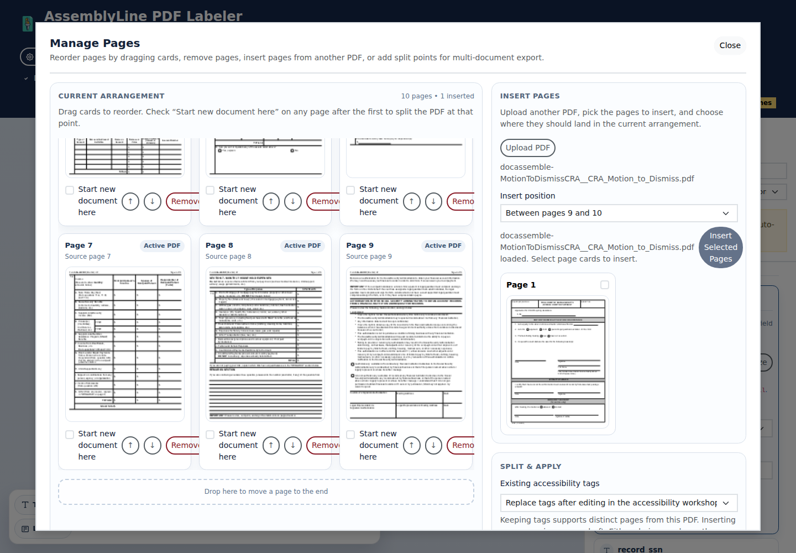

October 4, 2026. Installed with ~/venv/bin/dainstall --server localhost .. Chromium exercised the real Flask API on five original court/agency PDFs. No PDF repair endpoints were stubbed.
| Decorative court seal | The CRA motion’s seal becomes a noninteractive artifact. Its printed appearance stays identical; Print Form and other controls remain active. Undo restores it, later heading rebuilds do not restore a disabled button, and its image needs no second decorative decision. |
|---|---|
| Create and repair tables | The real Appeals form’s 6 × 3 motion table groups existing text and controls. Header directions survive a heading rebuild. Undo removes the creation without resurrection. The housing checklist’s invalid Span child becomes a data cell without changing its appearance; veraPDF’s TR-child rule is resolved. |
| Review font substitutions | The real motion-for-impoundment form offers a compatible Nimbus Roman substitute. The result requires an explicit visual decision, provides original/working PDF comparison, and can be rejected with Undo. Unsupported composite/Type3 substitutions are not offered. |
| Preserve page tags | The 10-page SSA form splits into 4- and 6-page PDFs. Moving the last page to the front and removing another exports 9 pages with identical widgets, values, title, language, readback content and intended order. Every retained page renders pixel identically. The workshop receives the preserved controls. Insertion requires the author’s explicit replacement choice. |
| Browser usability | The existing three steps and eight tasks remain. New table creation and repair tools are collapsed until opened. Page-move buttons work from the keyboard and retain focus. The real table editor has no axe violations or JavaScript errors. |
800 Python tests passed, 2 skipped, 70 subtests; 317 focused PDF tests and 33 subtests; 46 extraction tests; 18 workshop, 11 focus/page-assembly, and 4 dialog browser tests. JavaScript formatting, lint, types and syntax checks pass. Mypy passes on 87 source files. Exported files pass qpdf. Seal and table repairs, rebuilds, and retained SSA pages render pixel identically at 72 dpi.
veraPDF confirms that the housing table’s invalid row child is repaired and reports no table-related rule failure for the new Appeals table. These partial author workflows are not a PDF/UA certification: other source defects remain. Preserving the reordered SSA tags retains its source defects and introduces a first-heading sequence issue, which the author must review; page edits also deliberately clear its existing PDF/UA declaration.
Source hashes, workflow outcomes, raster/qpdf results and validator evidence (JSON) · Earlier 56-PDF corpus audit



The browser runs also found and fixed page Reset becoming stuck, widget reconstruction on page-only export or workshop handoff, a nested change event during table resizing, redundant image review after disabling a decorative button, and duplicate banner landmarks.